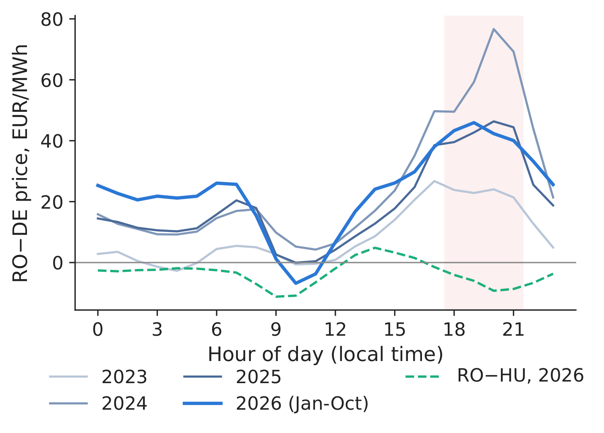
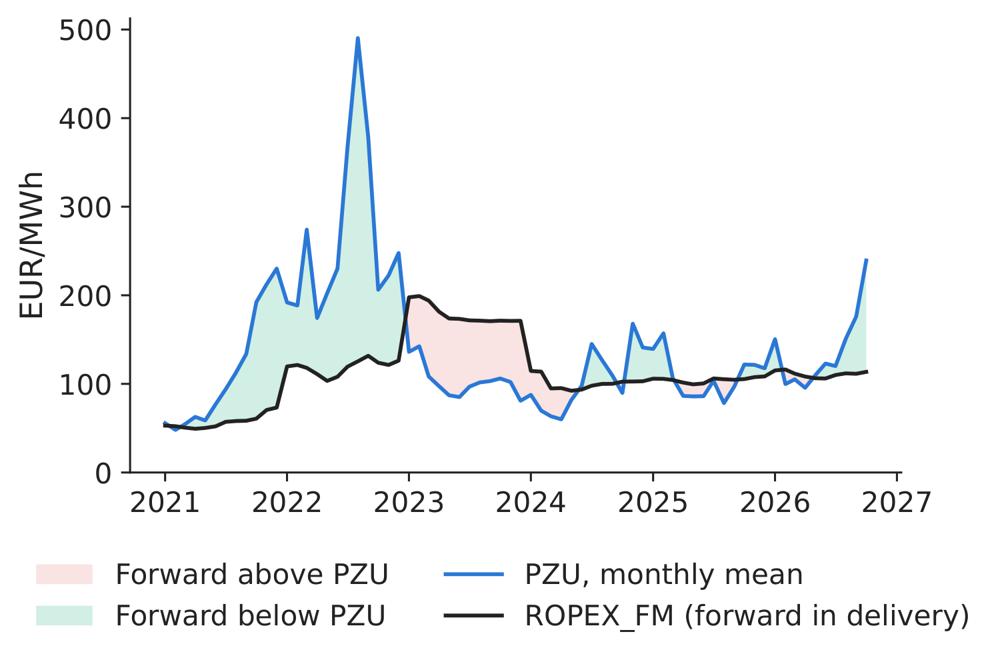
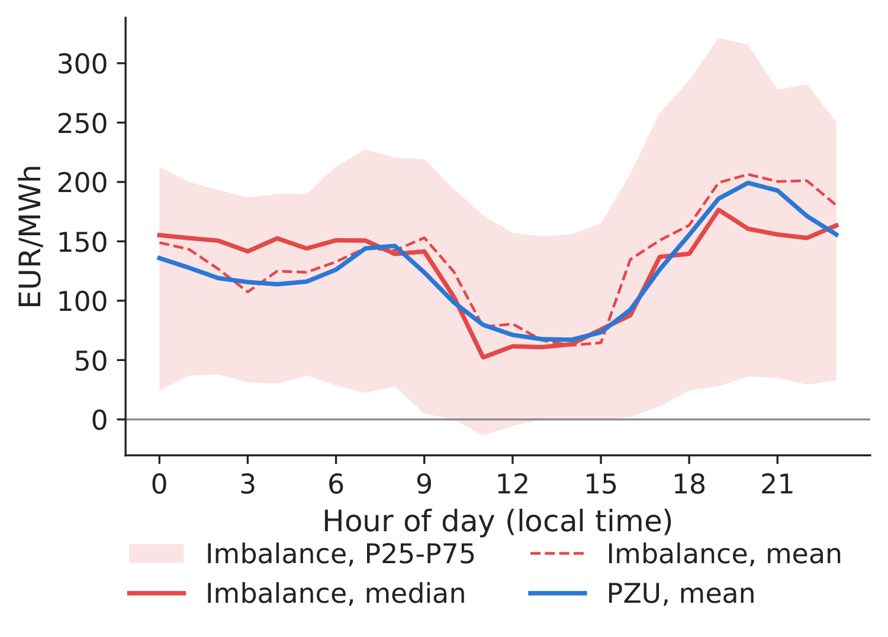
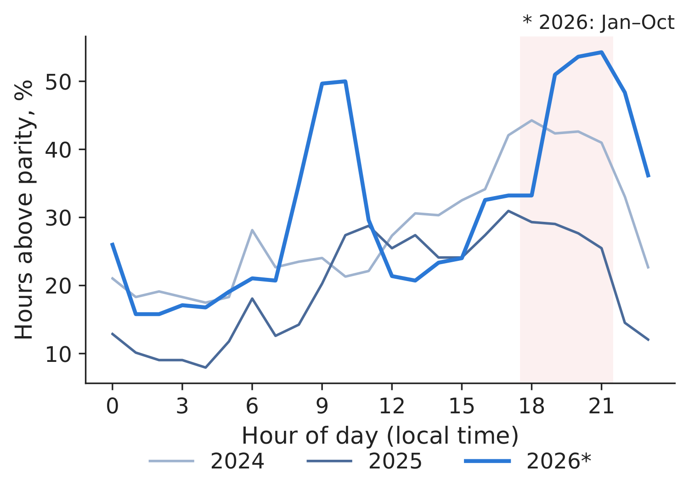
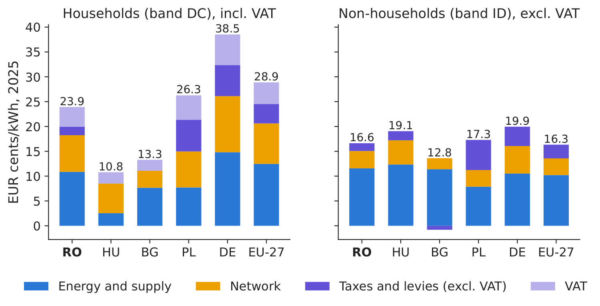
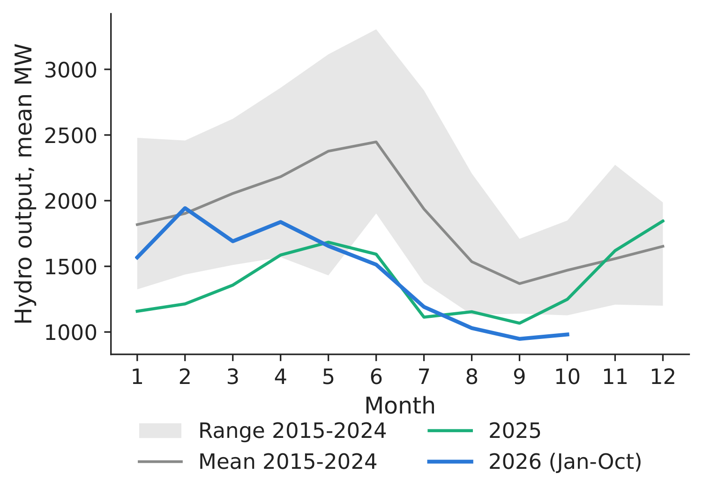
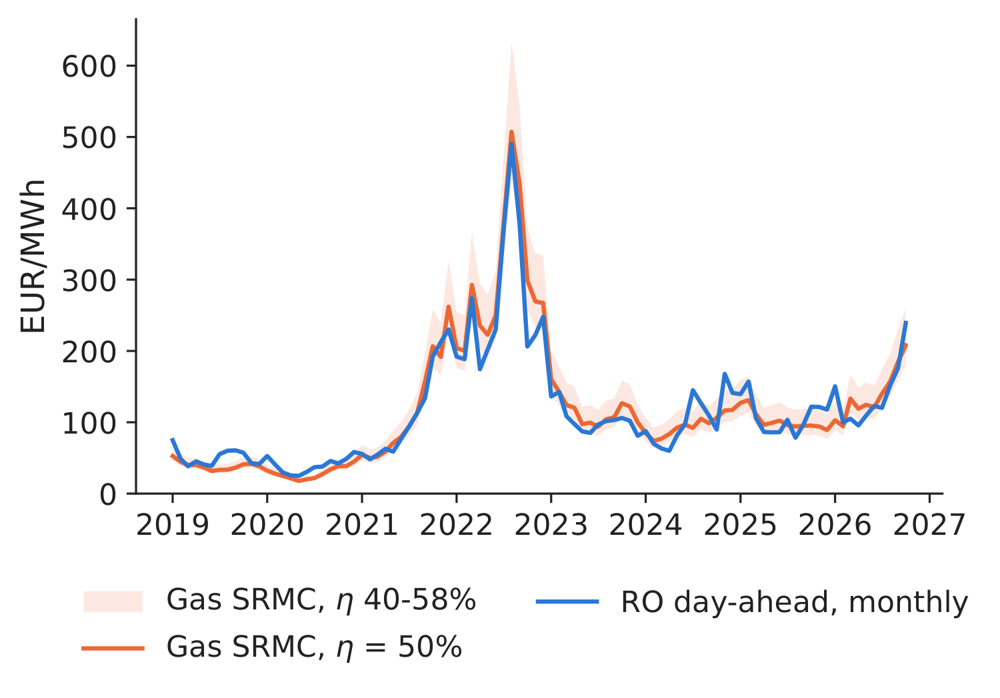
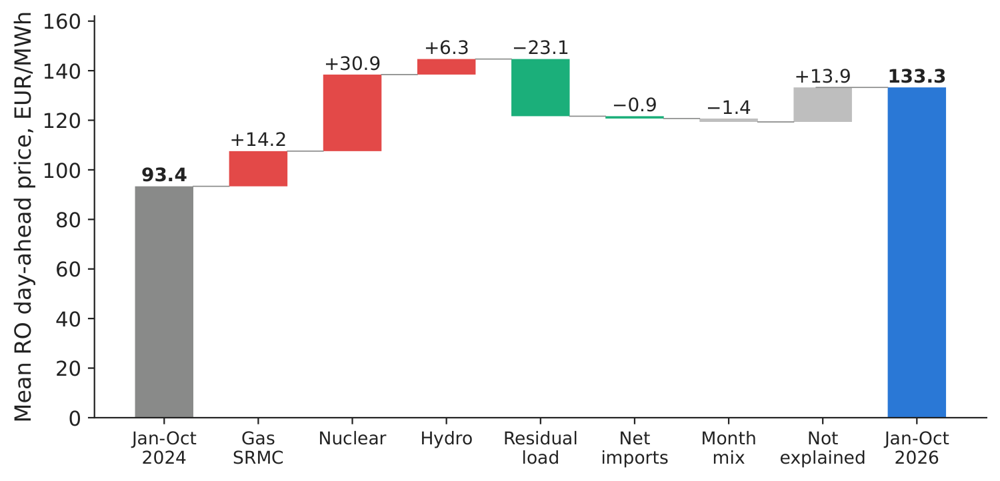

Case study 8
Determinants of high electricity prices in Romania
Case study on the course data, OPCOM, Transelectrica and Eurostat — a descriptive decomposition, without causal claims
Prof. dr. Daniel Traian PELE
Bucharest University of Economic Studies, Department of Statistics and Econometrics
Romanian Academy, Institute for Economic Forecasting
The paper
This case is not built on a paper of the group; it is a descriptive analysis on real data.
The business question
In autumn 2026 the board of a Romanian supplier, producer or large industrial consumer asks: why do we pay more for electricity than our competitors in Germany, and will it last? The answer shapes the hedging policy, the power purchase agreements (PPAs) for the next years and the case for storage or flexible demand.
Research question
How much more expensive is electricity in Romania (RO) than in Hungary (HU), Bulgaria (BG) and Germany-Luxembourg (DE-LU), and in which hours?
- We follow the price along the chain: forward contracts \(\to\) day-ahead market (PZU, Piața pentru Ziua Următoare, run by OPCOM, the Romanian power and gas market operator) \(\to\) balancing \(\to\) retail, and compare it with the cost of importing.
Which observable factors move with the price, and how much of the 2024–2026 increase do they account for in an in-sample accounting decomposition?
- No causal claim is made. The factors are correlated with each other and partly with the price itself.
The data
- Course data (
data/SOURCES.md), downloaded 4.11.2026, used to 31.10.2026 (“2026*” = January–October): day-ahead prices; RO generation, load and cross-border flows (energy-charts.info, from ENTSO-E, the European network of transmission system operators); TTF gas (Title Transfer Facility, World Bank, monthly); EU (European Union) emission allowances (EUA): auctions of the European Energy Exchange (EEX), after the last auction (15.12.2025) an exchange-traded EUA product rescaled by the 2025 auction/product price ratio (1.032). Downloaded for this case on 5.11.2026 by
download_c8_data.py(URLs, server response codes and dates indata_c8/download_log.json):- forward: OPCOM ROPEX_FM index (https://www.opcom.ro/ropexfm/ro), the volume-weighted price of all contracts in delivery in a month on the OPCOM forward markets (centralised bilateral markets PCCB-LE and PCCB-NC, the continuous double-negotiation market PC-OTC and others), converted at the monthly EUR/RON (Romanian leu) rate of the European Central Bank (ECB);
- balancing: Transelectrica (the transmission system operator) single final imbalance prices, 15 minutes, 10.2023–09.2026, monthly files, latest settlement run (https://www.transelectrica.ro/web/tel/rezultate-decontare-piata-de-echilibrare); 16 % of the quarter-hours (counted with the summer-time changes) have no price in the files and stay missing;
- retail (downloaded 5.11.2026): Eurostat
nrg_pc_204(households, band DC, 2,500–4,999 kWh/year, in EUR and in purchasing power standards, PPS),nrg_pc_205(non-households, band ID, 2,000–19,999 MWh/year), half-yearly to 2026-S1; componentsnrg_pc_204_c,nrg_pc_205_c, annual to 2025 (https://ec.europa.eu/eurostat/api/dissemination/statistics/1.0/data/).
The price chain
PZU: a regional, not a national, premium. In 2026* RO averaged 137.4 EUR/MWh, HU 141.0, BG 129.9, DE-LU 114.0 (Table 1).
- RO–HU: \(-\)1.3 EUR/MWh on average in 2019–2025, \(-\)3.5 in 2026*. RO–DE: 16.9 and 23.4.
- The premium over Germany is concentrated in the evening: 42.9 EUR/MWh at 18–22 h vs 10.5 at 10–16 h in 2026*; in the evening RO was even cheaper than HU (\(-\)7.0; Figure 1).
Forward: buying ahead was not systematically dearer. With the same monthly volume weights for both legs, contracts in delivery cost 179.8 EUR/MWh in 2023 against a PZU of 105.0, about the PZU in 2024–2025 (\(-\)13.6 and \(-\)4.2) and 25.7 EUR/MWh below it in 2026* (Table 2, Figure 2).
- ROPEX_FM describes contracts in delivery, signed at different dates; it is not an estimate of an ex-ante risk premium. Already contracted for 2027: 9.2 TWh at about 123.6 EUR/MWh (OPCOM report of 4.11.2026).
Balancing: a risk, not a mean cost. On matched quarter-hours of 2026* (January–September) the imbalance price averaged 128.1 EUR/MWh (median 126.2) against a PZU of 125.6 in the same quarter-hours; mean difference 2.5, standard deviation of the difference 279, mean absolute difference 152 EUR/MWh.
- The pooled dispersion is largest around midday: s.d. 313 EUR/MWh at 10–16 h vs 286 at 18–22 h (10.2025–09.2026; Figure 3).
Neighbour-price benchmark (import parity). With the cheaper of the HU and BG prices as benchmark (implicit day-ahead allocation has no separate capacity payment, although capacity has a scarcity value), RO was above it by more than 1 EUR/MWh in 31 % of the hours of 2026* (20 % in 2025), by 30.7 EUR/MWh on average.
- 48 % of the evening hours vs 28 % at midday (Figure 4): in these hours some import constraint (a border or the flow-based network) was binding; prices alone do not show which one.
Table 1. Day-ahead prices and differences, EUR/MWh; last two columns: RO–DE at 18–22 h and 10–16 h, local time. 2026* = January–October.
| Year | RO | HU | BG | DE-LU | RO\(-\)HU | RO\(-\)BG | RO\(-\)DE | RO\(-\)DE, 18–22 | RO\(-\)DE, 10–16 |
|---|---|---|---|---|---|---|---|---|---|
| 2019 | 50.4 | 50.4 | 47.5 | 37.7 | 0.1 | 2.9 | 12.7 | 18.8 | 16.1 |
| 2020 | 39.5 | 39.0 | 39.3 | 30.5 | 0.5 | 0.2 | 9.0 | 10.9 | 11.1 |
| 2021 | 111.4 | 113.8 | 108.7 | 96.8 | \(-\)2.4 | 2.7 | 14.6 | 21.9 | 18.2 |
| 2022 | 265.3 | 271.7 | 252.8 | 235.5 | \(-\)6.4 | 12.5 | 29.8 | 50.5 | 38.5 |
| 2023 | 103.7 | 106.8 | 103.8 | 95.2 | \(-\)3.1 | \(-\)0.1 | 8.6 | 23.0 | 4.6 |
| 2024 | 103.5 | 100.8 | 102.5 | 78.5 | 2.7 | 1.0 | 25.0 | 63.7 | 11.3 |
| 2025 | 108.2 | 108.5 | 106.9 | 89.3 | \(-\)0.3 | 1.3 | 18.8 | 43.3 | 7.3 |
| 2026* | 137.4 | 141.0 | 129.9 | 114.0 | \(-\)3.5 | 7.6 | 23.4 | 42.9 | 10.5 |
Source: our computation on energy-charts.info data; to 31.10.2026.
Table 2. The price chain, EUR/MWh. Forward and PZU: ROPEX_FM volume weights; imbalance from 2024, compared with the PZU of the same quarter-hours (2026*: January–September); import parity: share of hours with RO more than 1 EUR/MWh above the cheaper of HU and BG, and the mean gap in those hours.
| Year | Forward | PZU | Fwd\(-\)PZU | PZU, same months | Imbal. mean | Imbal.\(-\)PZU | s.d. (imbal.\(-\)PZU) | RO \(>\) parity, % | Gap |
|---|---|---|---|---|---|---|---|---|---|
| 2021 | 56.9 | 108.9 | \(-\)52.1 | – | – | – | – | 48 | 15.0 |
| 2022 | 119.1 | 264.3 | \(-\)145.2 | – | – | – | – | 28 | 53.9 |
| 2023 | 179.8 | 105.0 | 74.9 | – | – | – | – | 14 | 18.2 |
| 2024 | 100.3 | 113.9 | \(-\)13.6 | 104.3 | 53.8 | \(-\)50.5 | 543 | 28 | 24.4 |
| 2025 | 104.7 | 108.9 | \(-\)4.2 | 106.9 | 105.3 | \(-\)1.6 | 359 | 20 | 17.1 |
| 2026* | 111.3 | 137.0 | \(-\)25.7 | 125.6 | 128.1 | 2.5 | 279 | 31 | 30.7 |
Source: OPCOM, Transelectrica, ECB, energy-charts.info; our computation; to 31.10.2026.

Figure 1. RO–DE price difference by hour, by year; dashed: RO–HU, 2026*.
Source: our computation on energy-charts.info data; 2023–2026*.

Figure 2. Forward contracts in delivery (ROPEX_FM) vs PZU, monthly.
Source: OPCOM (4.11.2026), ECB, energy-charts.info; 2021–2026*.

Figure 3. Imbalance price vs PZU, by hour of day.
Source: Transelectrica, ECB, energy-charts.info; 10.2025–09.2026.

Figure 4. Hours with RO above import parity (cheaper of HU and BG), by hour.
Source: our computation on energy-charts.info data; 2024–2026*.
Retail, households. 2026-S1, all taxes included: 28.4 EUR cents/kWh in Romania vs 28.3 in the EU, 11.4 in Hungary, 13.4 in Bulgaria; 19.2 in Romania in 2025-S1.
- In PPS, a price-level adjustment, the Romanian price is 65 % above the EU average, the highest in the group.
- Components, 2025 (Figure 5): energy 10.9 vs 12.5 cents in the EU, network 7.4 vs 8.2, taxes incl. value added tax (VAT) 5.7 vs 8.3: none above the EU average. Against BG (regulated household tariffs) RO is higher in all three: energy +3.2, network +4.0, taxes +3.5.
- Retail, firms (band ID, excluding VAT and other recoverable taxes): 17.2 cents/kWh in 2026-S1 vs 15.6 in the EU (+1.64). Components, 2025: energy and supply +1.35, network +0.14, taxes \(-\)1.20 against the EU.

Figure 5. Retail price components, 2025, EUR cents/kWh; households incl. VAT, non-households excl. VAT.
Source: Eurostat nrg_pc_204_c, nrg_pc_205_c, downloaded 5.11.2026; bands DC and ID.
The drivers
We report associations between each factor and the price, without establishing causal relations.
Evening scarcity. Solar output at 13:00 rose from 540 MW (2023) to 1,714 MW (2026*); Romania now exports at noon (\(-\)555 MW net imports) and imports in the evening (1,139 MW at 19–22 h, 106 MW in 2023).
- PZU in 2026*: 199.2 EUR/MWh in the evening, 77.8 at midday, a spread of 121.4 (103.7 in 2024).
- Lower hydro output. 1,387 MW in 2025 (\(-\)25 % against the 2015–2024 mean of 1,857 MW) and 1,431 MW in 2026* (\(-\)25 % against the January–October mean of 1,908 MW; Figure 6).
- Nuclear output. 774 MW in 2026* vs 1,289 MW in 2015–2024; days below 50 MW: 70; days between 50 and 900 MW: 59; days without data: 29. The reasons for the low output are not in our data.
Gas SRMC as a benchmark (hypothesis: gas units set the price in many hours). Short-run marginal cost (SRMC) of a gas plant with electrical efficiency \(\eta\):
\[\text{SRMC}_t=\frac{P^{\text{TTF}}_t}{\eta}+P^{\text{EUA}}_t\,\frac{e_{th}}{\eta}\ \ [\text{EUR/MWh}_{el}],\qquad e_{th}=\text{0.202}\ \text{tCO}_2/\text{MWh}_{th},\quad \eta=\text{0.50}.\]- With \(\eta=\) 0.50: 2 MWh of gas and 0.404 tCO\(_2\) per MWh of electricity. October 2026: TTF 86.8 EUR/MWh, EUA 85.1 EUR/t, SRMC 208 EUR/MWh; monthly correlation with the PZU in 2023–2026*: 0.77, mean gap 0.03 EUR/MWh (Figure 7; band: \(\eta\) from 0.40 to 0.58).
- Coupling and the mix. Price separation (absolute difference above 1 EUR/MWh) in 2026*: RO–HU 39 % of market time units (MTUs), 53 % in the evening; RO–BG 20 % (3 % in 2025). Coal output fell from 1,582 MW (2019) to 628 MW (2026*), gas is flat (1,065 MW).

Figure 6. Monthly hydro output, 2025 and 2026* vs 2015–2024.
Source: energy-charts.info (ENTSO-E); 2015–2026*.

Figure 7. Monthly PZU vs gas SRMC (monthly averages).
Source: World Bank, EEX, EUA product, energy-charts.info; own computation; 2019–2026*.
A simple model
Daily ordinary least squares (OLS) on a chronological sample, 1.1.2023–31.10.2026, estimated in sample (no out-of-sample claim):
\[P_d=\alpha+\beta_1 RL_d+\beta_2 H_d+\beta_3 N_d+\beta_4 M_d+\beta_5\,\text{SRMC}_{d}+\textstyle\sum_{k=2}^{12}\gamma_k\mathbf{1}[\text{month}(d)=k]+u_d ,\]\(RL\): residual load (load minus wind and solar), \(H\): hydro, \(N\): nuclear, \(M\): net imports, all in GW, same-day realised values, known at the end of day \(d\) but not when the PZU clears (so this is an ex-post explanatory model, not a forecasting model); SRMC\(_d\) uses only prices known on day \(d\) (the latest published monthly TTF, available from day 6 of the following month, and the last EUA price before \(d\)).
- Complete-case sample: 1,371 of 1,400 days (29 dropped for missing data). Standard errors: Newey–West heteroskedasticity- and autocorrelation-consistent (HAC), 7 lags over the retained days, and clustered by month as a check.
- \(R^2=0.57\); all five coefficients have the expected sign; each additional EUR/MWh of SRMC goes with +0.45 EUR/MWh of price (HAC s.e. 0.06, month-clustered 0.10). Largest variance inflation factor (VIF): 11.1: the drivers overlap.
Accounting decomposition, January–October 2024 (\(A\), 305 days) to 2026 (\(B\), 275 days): \(\bar P_B-\bar P_A=\sum_k\hat\beta_k(\bar x_{k,B}-\bar x_{k,A})+(\bar{\hat u}_B-\bar{\hat u}_A)\).
- +39.9 EUR/MWh (93.4 \(\to\) 133.3): gas-and-carbon SRMC +14.2, nuclear +30.9, hydro +6.3, residual load \(-\)23.1, net imports \(-\)0.9, month mix \(-\)1.4, unexplained +13.9 (Table 3; waterfall on the last page).
- With 2023 as reference: +27.0, of which SRMC \(-\)5.4 and nuclear plus hydro +53.5: the split depends on the reference year.
- An in-sample accounting identity on correlated drivers, not a causal attribution: hydro and imports react to the price; the SRMC term may also capture omitted influences correlated with gas and carbon prices.
Table 3. Daily in-sample regression of the PZU (EUR/MWh) and decomposition of the change, January–October 2024 to 2026 (*). Month dummies and constant not shown.
| Driver | \(\hat\beta\) | HAC s.e. | Cluster s.e. | Mean 2024* | Mean 2026* | \(\Delta\) mean | Contribution, EUR/MWh |
|---|---|---|---|---|---|---|---|
| Residual load, GW | 42.23 | 4.23 | 5.10 | 5.10 | 4.55 | \(-\)0.55 | \(-\)23.1 |
| Hydro, GW | \(-\)27.79 | 5.94 | 7.49 | 1.71 | 1.48 | \(-\)0.23 | 6.3 |
| Nuclear, GW | \(-\)69.40 | 7.87 | 12.31 | 1.22 | 0.77 | \(-\)0.45 | 30.9 |
| Net imports, GW | \(-\)14.88 | 4.81 | 5.89 | 0.24 | 0.30 | 0.06 | \(-\)0.9 |
| Gas SRMC, EUR/MWh | 0.45 | 0.06 | 0.10 | 90.63 | 122.12 | 31.49 | 14.2 |
Source: our computation; 1.1.2023–31.10.2026; HAC (Newey–West, 7 lags) and month-clustered standard errors.
Implications for companies
Hedge the shape, not only the base. The average price premium is largest in the evening hours.
- Evening prices were 121.4 EUR/MWh above midday in 2026*: peak and evening products or options matter more than base-load forwards alone.
- Contracts in delivery were cheaper than the PZU in 2026* and dearer in 2023 (+74.9): layered purchases spread the contracting dates over time instead of betting on one date.
- Forecasting and balancing. The imbalance price differs from the PZU by 152 EUR/MWh on average in absolute value, with the largest dispersion around midday: better load and renewable forecasts and intraday trading reduce the exposure.
- Storage. The evening–midday spread is a gross benchmark for one battery cycle, before losses, degradation and timing constraints (Case 6). Bulgarian batteries, reported from 09.2026, discharged 576 MW on average in 10.2026; in September–October 2026 the evening RO–BG gap was 26.3 EUR/MWh: a coincidence in time, not a proven effect. Romanian batteries: average discharge 88 MW in 10.2026.
- PPA (power purchase agreement) design. The market value of the national solar profile was 86.3 EUR/MWh in 2026*, 63 % of the base price (66 % in 2024); a pay-as-produced solar PPA leaves the evening exposure with the buyer, while hybrid (solar plus storage) or shaped PPAs move part of it to the seller only if the contract guarantees evening delivery or a shape, at a price.
- Demand shifting. The same spread is the gross value of moving one MWh from the evening to midday; household demand reacts little to price (Case 5), so the potential lies mainly in industrial loads.
- System-level levers: interconnection (RO above the neighbour benchmark in 48 % of evening hours); storage and flexible demand; nuclear availability and outage planning. Hydro depends on the weather and gas is priced on the European market.
Discussion questions
- Your board says “Romanian power is the most expensive in the region”. Using Table 1, how would you qualify this?
- Your company buys mostly in the evening. Which products would you add to a base-load forward, and how would you size them?
- The decomposition assigns 14.2 EUR/MWh to the gas-and-carbon SRMC. Why can you not conclude that cheaper gas would have lowered the price by exactly this amount?
- The mean imbalance price is close to the PZU. Why should your company still budget for imbalance costs, and how would you estimate them?
- Households pay about the EU average in euro but much more in PPS. Which figure would you use with a regulator, and which with your clients?
Limitations of the analysis
- No causality: imports and reservoir hydro respond to the price; the SRMC term may capture omitted influences correlated with gas and carbon prices; the decomposition is in sample and changes with the reference year.
- Data: monthly TTF only; EUA from a rescaled exchange-traded product in 2026; physical regressors are realised values; gaps in the nuclear series; HAC lags count retained days; daily means hide the evening hours; the SRMC uses one efficiency and ignores operating costs, gas transport tariffs and the domestic gas price regime.
- Price chain: ROPEX_FM mixes products and contracts signed at different dates and is converted at a monthly rate (OPCOM uses the trade-date rate); 16 % of imbalance quarter-hours have no price; import parity ignores long-term capacity costs.
- Retail: one consumption band per category; annual components vs half-yearly prices; regulated tariffs in HU and BG make part of the comparison one of policies, not of markets.
Summary of Case 8
- QuestionWhy is Romanian electricity expensive, against whom and when?
- DataForward contracts (OPCOM), PZU and neighbours, imbalance (Transelectrica), RO generation and flows, TTF, EUA, Eurostat retail.
- MethodSpreads by year and hour; gas SRMC; daily in-sample OLS with HAC errors; accounting decomposition.
- ResultRO\(-\)DE 23.4 EUR/MWh (evening 42.9); RO\(-\)HU \(-\)3.5. 2024\(\to\)2026: +39.9, gas and carbon +14.2, nuclear+hydro +37.2.
- DecisionHedge the evening shape; layer forward purchases; value storage and flexible demand; shape PPAs.

Figure 8. In-sample accounting decomposition of the change in the mean PZU, January–October 2024 to 2026 (not causal).
Source: our regression on energy-charts.info, World Bank and EEX data; 1.1.2023–31.10.2026.
Related work of our group (pointers). Andrei, Pele & Cramer (2026), Proceedings of the International Conference on Business Excellence (PICBE) 20(1), 84–103, doi:10.2478/picbe-2026-0013 (the 2024 crisis, Case 1); Proșcanu, Proșcanu & Pele (2025), Journal of Social and Economic Statistics (JSES) 14(2), 131–141, doi:10.2478/jses-2025-0009 (price elasticity of demand, Case 5); Andrei et al. (2026), SSRN (Social Science Research Network) 6872381, doi:10.2139/ssrn.6872381 (battery arbitrage, Case 6).
Abbreviations. ECB: European Central Bank; EEX: European Energy Exchange; EUA: EU emission allowance; HAC: heteroskedasticity- and autocorrelation-consistent; MTU: market time unit; OLS: ordinary least squares; PCCB-LE, PCCB-NC: OPCOM centralised bilateral markets; PC-OTC: OPCOM continuous OTC (over the counter) market; PPA: power purchase agreement; PPS: purchasing power standards; PZU: Romanian day-ahead market; ROPEX_FM: OPCOM forward-market price index; SRMC: short-run marginal cost; TTF: Title Transfer Facility; VAT: value added tax; VIF: variance inflation factor.
Abbreviations
| BG | Bulgaria |
|---|---|
| DC | Eurostat household consumption band, 2,500–4,999 kWh per year |
| DE | Germany |
| DE-LU | Germany-Luxembourg |
| ECB | European Central Bank |
| EEX | European Energy Exchange |
| ENTSO-E | European Network of Transmission System Operators for Electricity |
| EU | European Union |
| EUA | EU emission allowance |
| HAC | heteroskedasticity- and autocorrelation-consistent |
| HU | Hungary |
| ID | Eurostat non-household consumption band, 2,000–19,999 MWh per year |
| JSES | Journal of Social and Economic Statistics |
| MTU | market time unit |
| OLS | ordinary least squares |
| OPCOM | the Romanian power and gas market operator |
| OTC | over the counter |
| PC-OTC | OPCOM centralised market with continuous double negotiation |
| PCCB-LE | OPCOM centralised bilateral market, extended auction |
| PCCB-NC | OPCOM centralised bilateral market, continuous negotiation |
| PICBE | Proceedings of the International Conference on Business Excellence |
| PPA | power purchase agreement |
| PPS | purchasing power standards |
| PZU | Piața pentru Ziua Următoare, the Romanian day-ahead market |
| RO | Romania |
| RON | Romanian leu |
| SRMC | short-run marginal cost |
| SSRN | Social Science Research Network |
| TTF | Title Transfer Facility |
| VAT | value added tax |
| VIF | variance inflation factor |
The text, numbers, charts and tables of this page are those of the case brief; every number is computed by the case notebook on the course data.